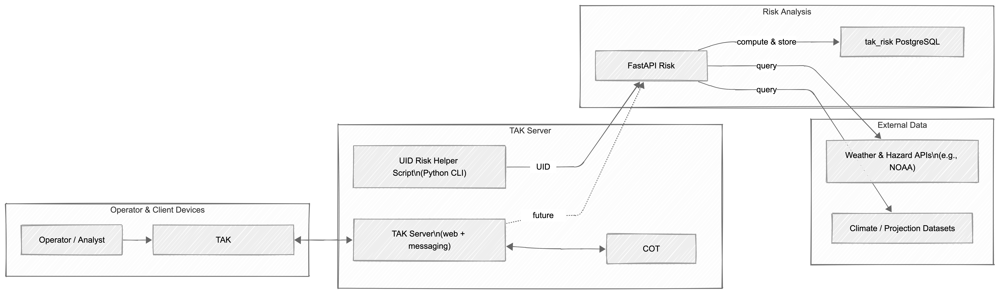
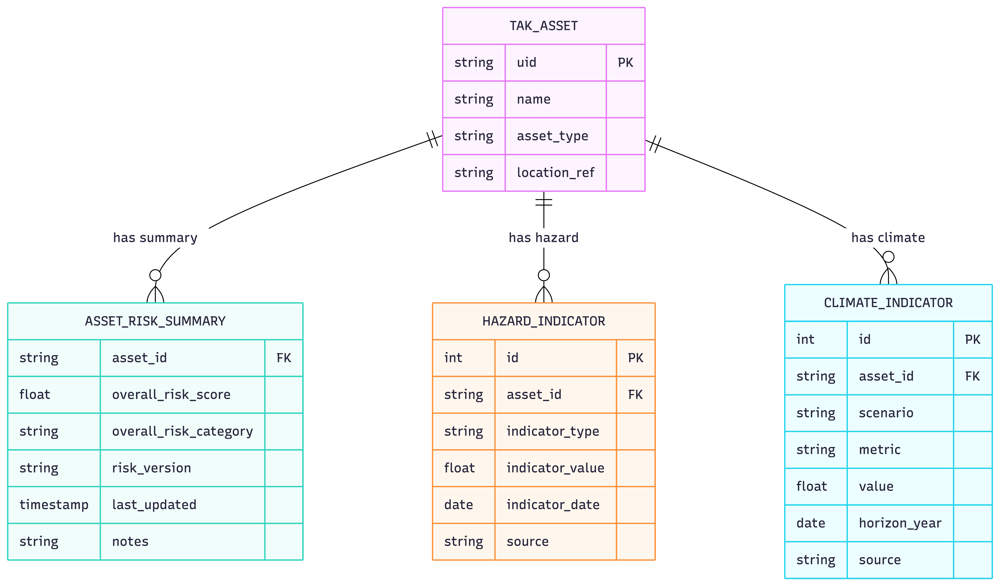
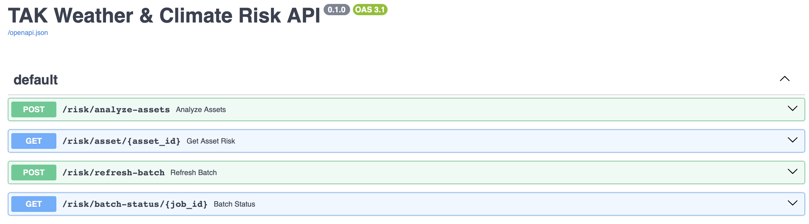
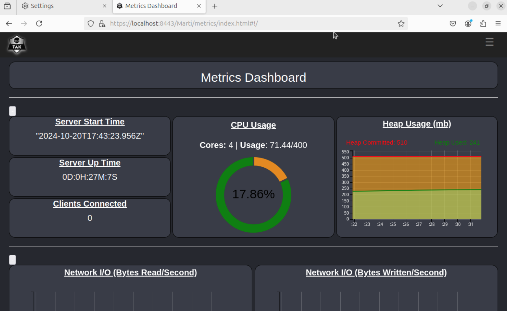

Capstone Experience#
Problem Description
My MGIST capstone focused on developing a centralized, TAK-based risk platform for critical infrastructure, in partnership with Digital Cloak. The goal of the project was to connect assets managed in the Team Awareness Kit (TAK) environment to a backend risk service that can summarize current and future hazard conditions (such as weather and climate-related extremes) for each asset. Rather than producing a single static web map, the project emphasized designing a robust integration pattern that links TAK-managed asset identifiers to a dedicated risk analysis API and database.
Analysis

The capstone environment consisted of a self-hosted TAK server, a FastAPI-based risk service, and a dedicated PostgreSQL database for storing risk summaries keyed by TAK asset identifiers. TAK Server was installed and configured to manage authentication, client connectivity, and the core mission data, while the risk service ran in a separate Python environment on the same virtual machine. A new tak_risk database was created to store per-asset risk scores and categories, with tables designed around the use of TAK unique identifiers (UIDs) as primary keys.
The FastAPI risk service exposes endpoints that accept lists of TAK UIDs, compute risk summaries using hazard and climate indicators, and persist the results in the tak_risk database. A small server-side helper script demonstrates the intended integration pattern by calling the risk API for a given UID and returning an overall risk category and score. Throughout the project, configuration work on TLS, authentication, and service connectivity ensured that the prototype reflected real-world constraints associated with secure, defense-oriented environments.

Weather and climate data are incorporated conceptually in this prototype, with the analysis code structured to pull from authoritative external services and datasets (such as NOAA alerts and climate indicators) as those feeds are integrated. The focus of the capstone was to establish clean interfaces, schemas, and integration logic so that more detailed analytical models and data sources can be added without re-architecting the system.
Results

The project delivered a functioning end-to-end prototype that links TAK-managed assets to a backend risk analysis service. The TAK server was successfully deployed and configured on a virtual machine, with secure web and messaging endpoints, user authentication, and a working cot database. The FastAPI risk service was implemented and deployed in a dedicated environment, accepting TAK UIDs as input and writing risk summaries to the tak_risk database.
End-to-end tests using the UID helper script confirmed that a TAK asset’s identifier can be passed to the risk API, processed, and returned as a concise risk summary that includes an overall category and score. These tests validated the schema design, the API contract, and the database interactions. Exploratory work on TAK’s web interface and associated services also documented the current limits of the server environment and identified clear next steps for surfacing risk information directly inside TAK clients.

Reflection
This capstone experience brought together core themes from the MGIST program: integrating heterogeneous spatial data feeds, designing web services and databases for decision support, and working within the constraints of security-focused infrastructure. Building the TAK-based risk platform strengthened my comfort with service-oriented architectures, API design, and the tradeoffs involved in separating backend analytics from client-facing tools. It also provided valuable perspective on how small architectural decisions (such as using TAK UIDs as keys) can simplify integration across complex systems.
Looking ahead, I would like to extend this work by enriching the risk model with live NOAA alert feeds, historical event data, and downscaled climate projections, and by embedding the risk workflow directly into TAK client plugins so that operators can trigger and view risk summaries from within their primary operational interface. The prototype developed for this capstone provides a solid foundation for those enhancements and a reusable pattern for connecting TAK-managed assets to other types of analytical services.